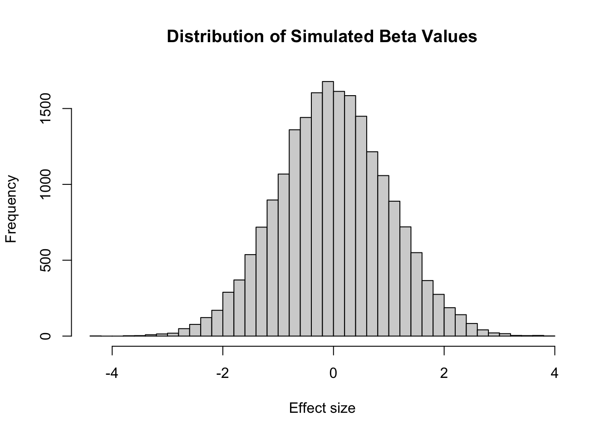
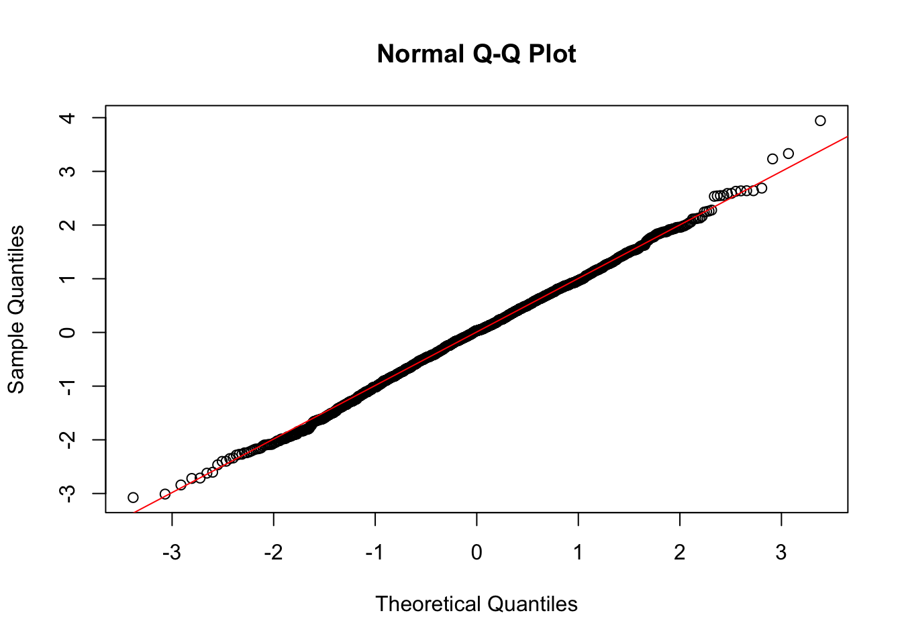
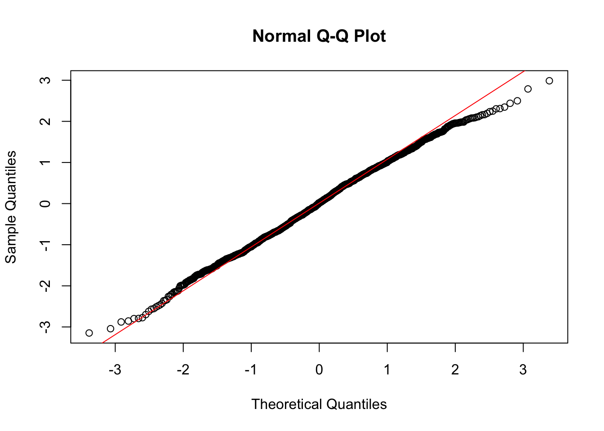
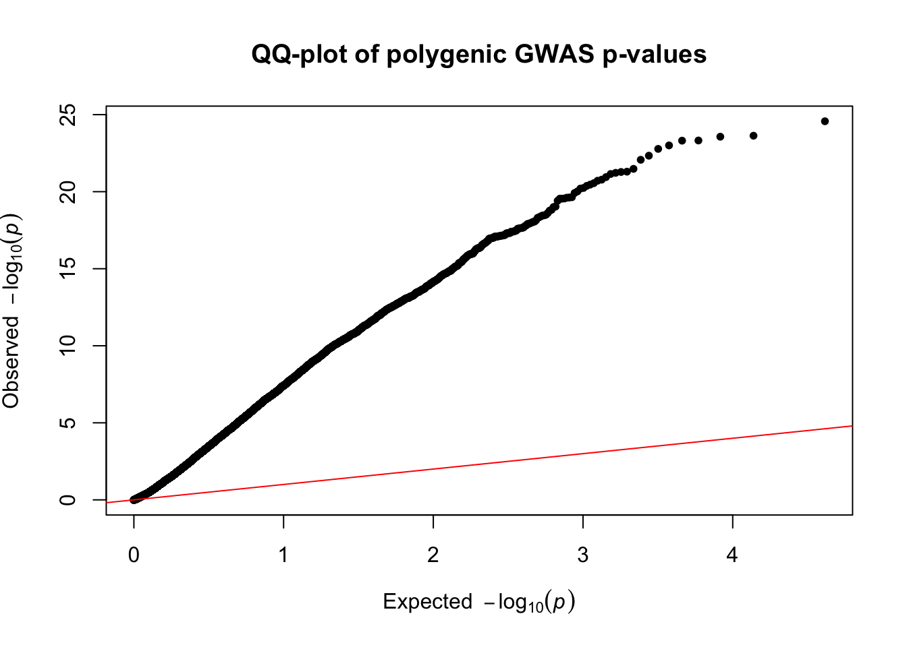
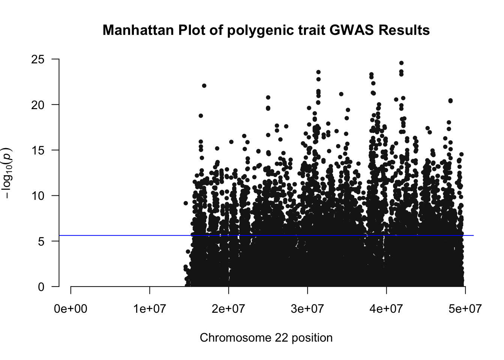
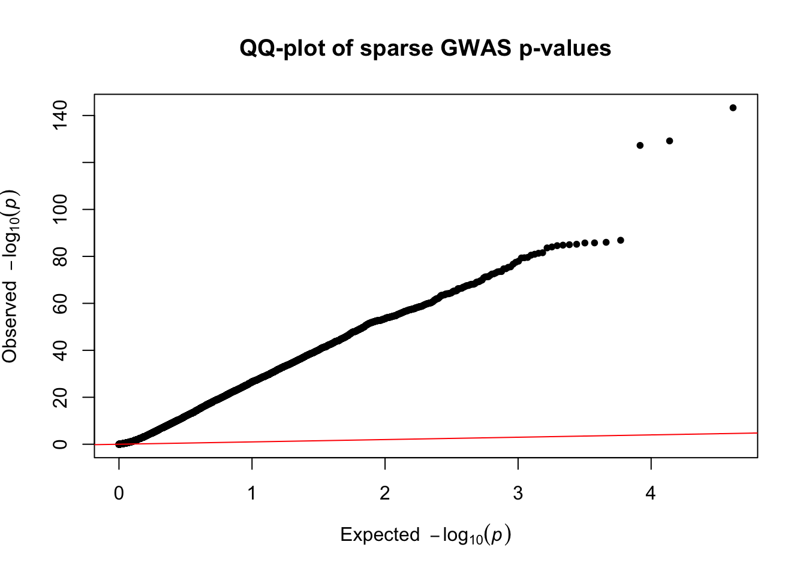
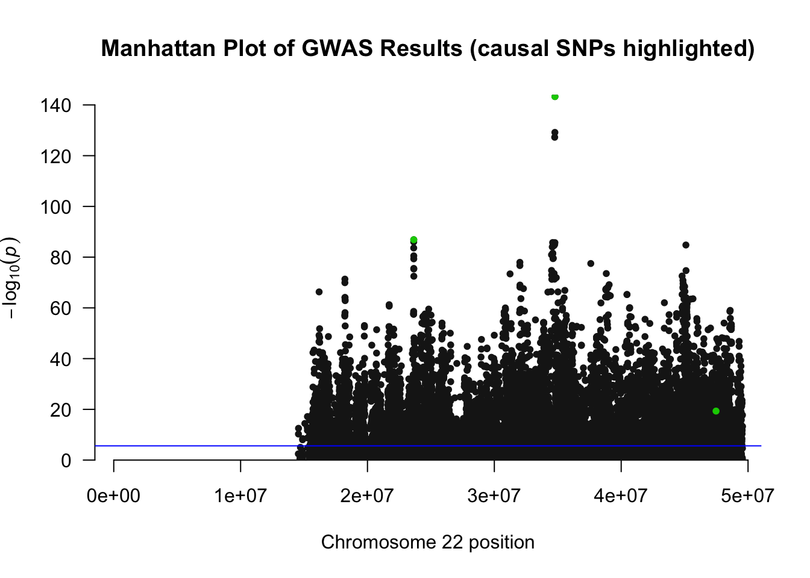
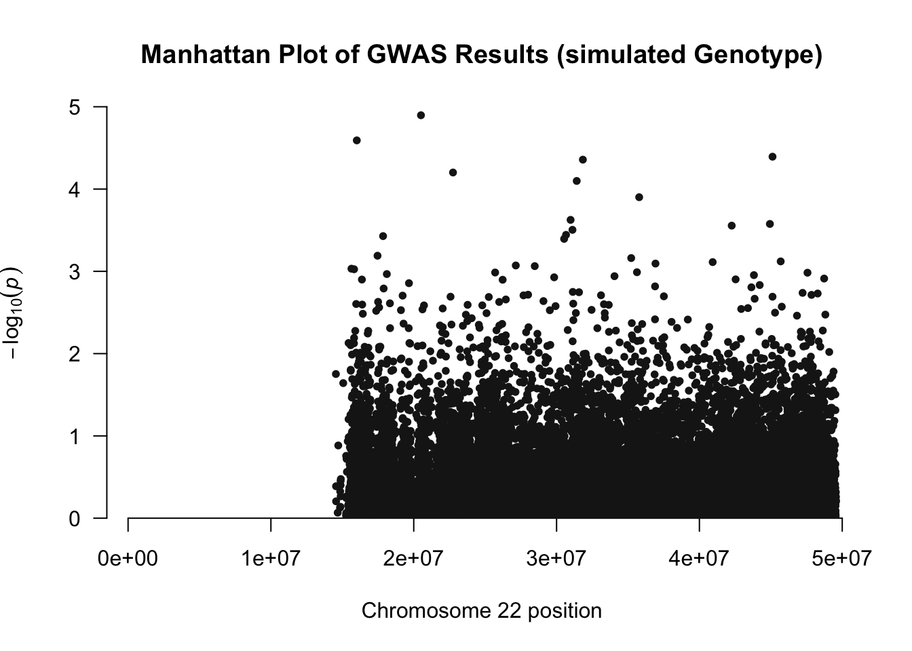
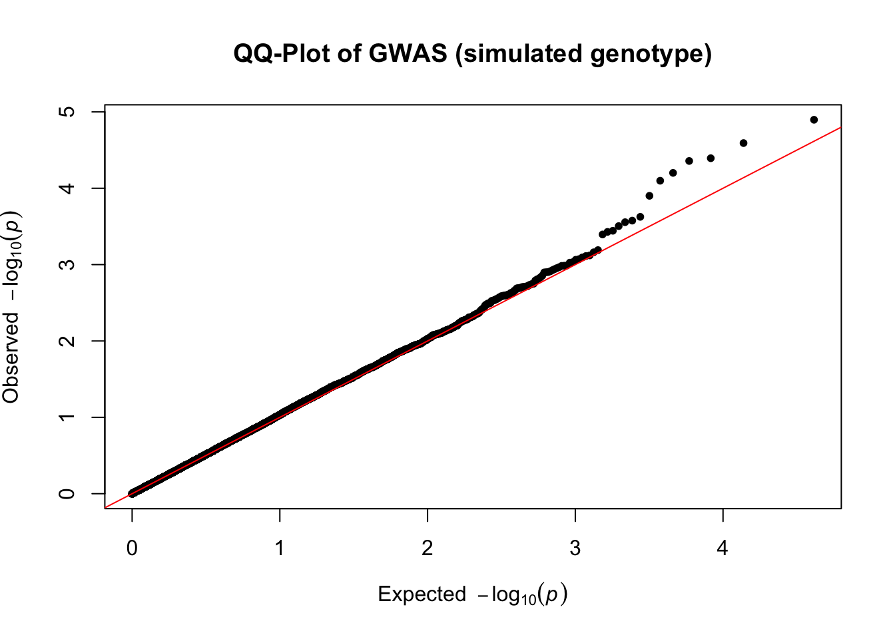

install.packages("genio") # allows us to read genotype from a PLINK file
install.packages("data.table")
install.packages("Matrix")
install.packages("dplyr")Learning objectives
Build intuition about how to simulate a phenotype, given genotype information and a vector of effect sizes (betas).
Demonstrate cases for polygenic (many SNPs) vs. a few causal SNPs driving a phenotype.
Learn how to run a GWAS and produce visualizations, like Manhattan plots and QQ plots.
Have fun!
Part 1: Simulating a polygenic trait
Setup
Download the genotype data from here and place into proper folder/path of choice.
Install and load various packages, set the seed (for reproducibility).
# loading installed packages
library(genio)
library(data.table)Warning: package 'data.table' was built under R version 4.3.3library(Matrix)
library(dplyr)
Attaching package: 'dplyr'The following objects are masked from 'package:data.table':
between, first, lastThe following objects are masked from 'package:stats':
filter, lagThe following objects are masked from 'package:base':
intersect, setdiff, setequal, union# setting seed for reproducibility of results!
set.seed(1)Reading in the PLINK Data
The PLINK data is composed of a .fam, .bim, and .bed files:
.fam: contains family IDs (FID), individual IDs (IID), paternal ID (PID), maternal ID (MID) Sex (1,2) and phenotype (0,1)
.bim: contains chromosome (Chr), SNP (rsID), genetic distance (GD), base-pair position (BPP), reference allele (A1), and alternate allele (A2)
.bed: contains the binary version of SNP data in a compact format.
#Providing PLINK path to file
#NOTE: hapmap3_ch22 contains ALL 3 of the .fam, .bim, and .bed files.
PLINK_data <- read_plink("/Users/ajlonski/Desktop/hapmap/hapmap3_ch22")Reading: /Users/ajlonski/Desktop/hapmap/hapmap3_ch22.bimReading: /Users/ajlonski/Desktop/hapmap/hapmap3_ch22.famReading: /Users/ajlonski/Desktop/hapmap/hapmap3_ch22.bed# Need to transpose to get individuals in rows and SNPs in columns
X <- t(PLINK_data$X)
#Converting X to matrix format
X <- as.matrix(X)Sometimes, our X matrix has NA values. When that is the case, we need to address them before downstream steps, or we will get errors!
# Want to impute missing values -- let's do the population mean in this case
col_means <- colMeans(X, na.rm = TRUE)
na_idx <- which(is.na(X), arr.ind = TRUE) # row/col indices of every NA
X[na_idx] <- col_means[na_idx[, "col"]] # look up each NA's OWN column's mean by positionNow that we’ve addressed the potential NAs issue, let’s inspect X and check for NAs.
# This should sum to 0 if we have no NA values!
X %>% is.na(.) %>% sum()[1] 0Moving on, let’s count the number of individuals and SNPs in our X matrix.
##Count rows in X --> 1397 individuals
num_individuals <- nrow(X)
# Count columns in X --> 20649 SNPs in chr22
num_SNPS <- ncol(X)Finally, we can actually run our simulation. We start by siulating the vector of beta values that we multiply against our genotype (X) matrix. Following that, we simulate our noise/error term, called epsilon here. Finally, we get the genetic component of the phenotype by matrix multiplying our matrix X and vector of betas together!
#Simulating beta vector with same number of SNPs as genotype information
simulated_betas <- matrix(rnorm(num_SNPS, 0, 1), num_SNPS,1)
#Let's also check that our simulated betas look approximately normal
hist(simulated_betas, breaks = 50, main = "Distribution of Simulated Beta Values",
xlab = "Effect size")
# simulating epsilon, which is our noise/error term
epsilon <- rnorm(num_individuals, 0, 1)
# Multiplying X and Beta to get our genetic component of the phenotype
G <- X %*% simulated_betasAfter simulating, we now need to address heritability, or the variation in the phenotype that is explained by the genotype. In this case, we will set heritability to 0.5, meaning that 50% of the phenotypic variance is explained by the genotype. We scale our genetic component G and our noise term epsilon accordingly!
# setting heritability = 0.5, so 50% of phenotypic variance is explained by the genotype
h2 = 0.5
#Scaling our genetic component G to given heritability
G <- scale(G) * sqrt(h2)
# scaling epsilon to have variance = 1 - h2, so that the total variance of Y is 1
epsilon <- scale(epsilon) * sqrt(1 - h2)
# Getting our final phenotype Y from G and epsilon
Y <- G + epsilonWe can visualize with a QQ-plot to see if our simulated phenotype is approximately normal. A QQ-plot is a way to assess whether the data is approximately normally distributed. If our data is normal, its points should fall along the red line, which is the theoretical quantiles of a normal distribution.
qqnorm(Y); qqline(Y, col = "red")
Indeed, it does appear to be normal, given that the points follow the theoretical red line closely. Here, each point in the QQ-plot is a paired quantile of our simulated aqnd theoretical phenotype Y, and the red line is the theoretical quantiles of a normal distribution. While we do see some points above/below the red line at the tails of the distribution, this is expected, as we are simulating a polygenic trait with many SNPs contributing to the phenotype. When above the line, it means that the observed quantile is greater than the theoretical quantile, so some individuals have higher phenotype values than a Gaussian model would predict. When below the line, it means that the observed quantile is less than the theoretical quantile, so some individuals have lower phenotype values than a Gaussian model would predict.
Question: what should the var(G) / var(Y) be? Run the code below after answering.
var(G) / var(Y)If this value is close to 0.5, it means we have simulated our polygenic trait correctly (yay)!
Part 2: Simulating a trait with a few causal SNPs
Now that we have successfully simulated a polygenic trait, we can look at a second scenario where we have a few causal SNPs driving the phenotype. In this case, we will randomly select 10 SNPs to be causal, and set the effect sizes of all other SNPs to 0.
# Redefining heritability (h2) here, as good practice
h2 = 0.5
#Next, we can try simulating with just a few causal SNPs
# specifiy number of causal SNPs first
n_causal <- 3
#select indices that have our causal SNPs
causal_indices <- sample(1:num_SNPS, n_causal)
#retain effect sizes of only the causal SNPs, set others equal to 0
betas <- matrix(0, num_SNPS, 1)
betas[causal_indices] <- rnorm(n_causal, 0, 1) # normalizing effect sizesNext, let’s multiply X by beta and scale it so that it has variance equal to our heritability. After that, we simulate epsilon and similarly scale it so that it has variance equal to 1 - heritability.
#multiply X by our betas to get genetic component
G_few <- X %*% betas
#scaling genetic component, just like we did in part 1
G_few <- scale(G_few) * sqrt(h2)
# simulating epsilon for our few causal SNPs
epsilon_few <- rnorm(num_individuals, 0, 1)
# scaling epsilon to have variance = 1 - h2, so that the total variance of Y is 1
epsilon_few <- scale(epsilon_few) * sqrt(1 - h2)
# Getting our final phenotype Y from G and epsilon
Y_few <- G_few + epsilon_fewLet’s make another QQ-plot to see if our simulated phenotype is approximately normal, even with only a few causal SNPs.
qqnorm(Y_few); qqline(Y_few, col = "red")
As a final step, let’s check that our heritability is still roughly 0.5, even with only a few causal SNPs.
# Checking that heritability is still roughly 0.5
var(G_few) / var(Y_few)Part 3: Running a GWAS
Now that we have run both the polygenic and sparse simulations, let’s do one final thing – run a GWAS! First, we need to install the qqman package, which will allow us to visualize our GWAS results with a Manhattan plot.
install.packages("qqman")library(qqman)Warning: package 'qqman' was built under R version 4.3.3For example usage please run: vignette('qqman')Citation appreciated but not required:Turner, (2018). qqman: an R package for visualizing GWAS results using Q-Q and manhattan plots. Journal of Open Source Software, 3(25), 731, https://doi.org/10.21105/joss.00731.Next, we can run a GWAS on our simulated phenotype in the polygenic case, and then later, driven by only a few causal SNPs. We will use a linear model to get the p-values for each SNP, and then create a data frame with the results.
## Running a GWAS on our polygenic trait, using a linear model
# X is our genotype matrix
# apply() loops over X, iterating over each column (SNP) and running a linear model of Y ~ x, where x is the SNP genotype.
pvalues_polygenic <- apply(X, 2, function(x)
# we then pull out the p-value for the SNP from the summary of the linear model
# we take coefficients[2,4], which are the x coefficient (SNP effect) and column 4 is the p-value for that coefficient
summary(lm(Y ~ x))$coefficients[2,4]
)
gwas_polygenic <- data.frame(
SNP = PLINK_data$bim$id,
CHR = as.numeric(PLINK_data$bim$chr),
BP = PLINK_data$bim$pos,
P = pvalues_polygenic
)We can also make a QQ-plot of the p-values generated from our GWAS. In doing so, we can check our observed -log10(p-values) against the expected -log10(p-values) under the null hypothesis of no association. If our causal SNPs are driving the phenotype, we should see a deviation from the null line at the tail end of the QQ-plot.
qq(pvalues_polygenic, main = "QQ-plot of polygenic GWAS p-values")
Why does our QQ-plot look like that? It could be for a few different reasons, but is likely due to Linkage Disequilibrium (LD)-based contamination of the data. LD is the non-random association of alleles at different loci, and can cause spurious associations in GWAS if not accounted for.
We can also create a Manhattan plot to visualize the distribution of GWAS hits across chromosome 22, where the y-axis is the negative log of the p-value for each associated SNP and the x-axis is the base-pair position of each SNP.
manhattan(gwas_polygenic, #our dataframe we just made
main = "Manhattan Plot of polygenic trait GWAS Results",
suggestiveline= -log10(0.05 / num_SNPS), #Bonferroni corrected threshold
genomewideline=FALSE)
We can also run this GWAS for the sparse case, where we have a few causal SNPs.
# Running a GWAS on our simulated phenotype with a few causal SNPs, using a linear model
# X is our genotype matrix
# apply() loops over X, iterating over each column (SNP) and running a linear model of Y_few ~ x, where x is the SNP genotype.
pvalues_sparse <- apply(X, 2, function(x)
# we then pull out the p-value for the SNP from the summary of the linear model
# we take coefficients[2,4], which are the x coefficient (SNP effect) and column 4 is the p-value for that coefficient
summary(lm(Y_few ~ x))$coefficients[2,4]
) # p-values for each SNP!
gwas_sparse <- data.frame(
SNP = PLINK_data$bim$id,
CHR = as.numeric(PLINK_data$bim$chr),
BP = PLINK_data$bim$pos,
P = pvalues_sparse)
# Pulling out the rsIDs of causal SNPs
causal_rsIDs <- PLINK_data$bim$id[causal_indices]Let’s also make a QQ-plot, like we did before:
qq(pvalues_sparse, main = "QQ-plot of sparse GWAS p-values")
We will also create a Manhattan plot and highlight the causal SNPs in green!
manhattan(gwas_sparse, #our dataframe we just made
main = "Manhattan Plot of GWAS Results (causal SNPs highlighted)",
highlight = causal_rsIDs, #highlighting the "causal" SNPs
suggestiveline= -log10(0.05 / num_SNPS), #Bonferroni corrected threshold
genomewideline=FALSE)
The blue line on the manhattan plot is the suggestive significance threshold, set at -log_10(1 x 10^-5). It appears that some SNPs are above the threshold, which is expected, since we have causal SNPs driving the phenotype. Given that other SNPs at the same loci also appear to get “pulled up” above the threshold by our signficant SNPs, we can again see this potential LD contamination.
We can also use simulated genotype data in order to better highlight the causal SNPs driving our phenotype. Let’s quickly explore the simulated genotype data, with 100 individuals and 1000 SNPs.
maf <- 0.4
num_individuals <- 1397
num_SNPS <- 20649
#Simulating beta vector with same number of SNPs as genotype information
simulated_betas <- matrix(rnorm(num_SNPS, 0, 1), num_SNPS,1)
# simulating epsilon, which is our noise/error term
epsilon <- rnorm(num_individuals, 0, 1)
#Generating the genetic data
#creating genotype matrix: N individuals x M genetic variants
# Each entry is 0, 1, or 2 (# of minor alleles)
X_sim <- matrix(rbinom(num_individuals * num_SNPS, 2, maf), num_individuals, num_SNPS)
X_sim <- as.matrix(X_sim)
G_sim <- X_sim %*% simulated_betas
# setting heritability = 0.5, so 50% of phenotypic variance is explained by the genotype
h2 = 0.5
#Scaling our genetic component G to given heritability
G_sim <- scale(G_sim) * sqrt(h2)
# scaling epsilon to have variance = 1 - h2, so that the total variance of Y is 1
epsilon <- scale(epsilon) * sqrt(1 - h2)
# Getting our final phenotype Y from G and epsilon
Y_sim <- G_sim + epsilonpvalues_simulated <- apply(X_sim, 2, function(x)
summary(lm(Y_sim ~ x))$coefficients[2,4]
)
gwas_simulated <- data.frame(
SNP = PLINK_data$bim$id,
CHR = as.numeric(PLINK_data$bim$chr),
BP = PLINK_data$bim$pos,
P = pvalues_simulated
)
manhattan(gwas_simulated,
main = "Manhattan Plot of GWAS Results (simulated Genotype)",
suggestiveline= -log10(0.05 / num_SNPS), #Bonferroni corrected threshold
genomewideline=FALSE)
qq(pvalues_simulated, main = "QQ-Plot of GWAS (simulated genotype)")
Our simulated genotype GWAS looks good, according to the QQ-plot that we made! This now enables us to distinguish the effects of LD in the previous simulation.
End of blog questions (to check knowledge):
- What is the difference between a polygenic trait and a sparse trait?
- What are the steps that go into simulating a phenotype and eventually running a GWAS?
- How do we visualize the results of a GWAS? What is a Manhattan plot and what does it tell us?End of blog tutorial review :
In this tutorial, we learned how to simulate a phenotype from a genotype.
- Learned this for two different cases: polygenic (many SNPs) and sparse (few SNPs with large effects) cases.
We also learned how to run a GWAS on our simulated phenotype and visualize the results with a Manhattan plot.